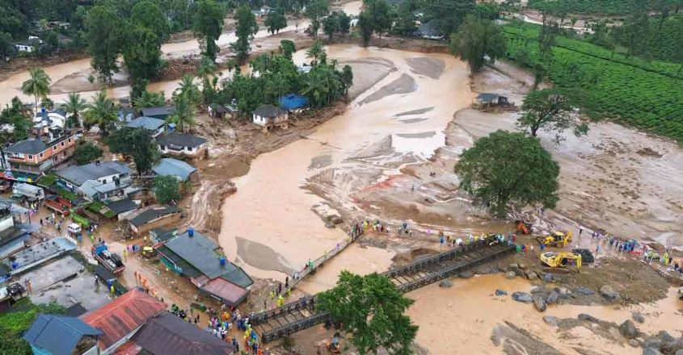
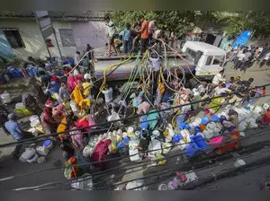
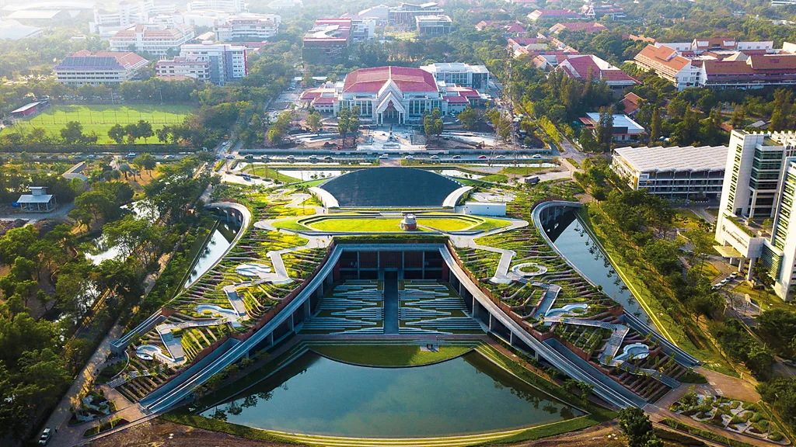

Efficient Water Management System
Aquaflow
Home
About Us
News
Contact
Water flows through the news every day. Many stories about climate change, economics, politics, culture and leisure have a water-related dimension. Explore what people are doing around the world on water.
Wayanad landslide: 375 dead,over 200 still missing
Onmanorama, August 03, 2024 07:20 AM IST

Nine villages in Karnataka inundated due to overflowing rivers
Hindustantimes, Aug 02, 2024 07:08 AM IST
Eco India: Why Delhi needs to increase its reliance on treated wastewater to meet its water needs
Scroll, Aug 04, 2024 · 08:55 AM IST

Almost 500 chemicals found in England’s rivers and groundwater
TheGuardian, Aug 06, 2024 15.00 BST
How Asia's 5,000-year-old rice terraces are inspiring modern flood control
BBC, Aug 06, 2024 · 15:25 GMT
